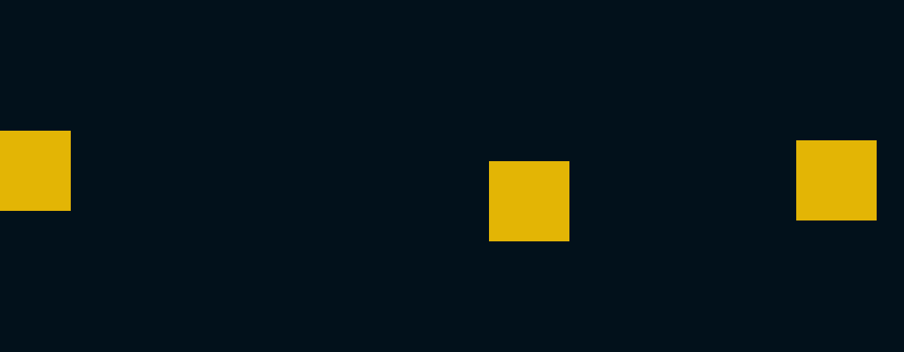

Voorbeeld van het muis parallax effect

Bekijk op Codepen
Uitleg
Om te beginnen moeten we een lege div aan maken in onze HTML
bestand.
<div id="cursor"></div>
Nu moeten we de cursor nog mooi maken. In dit geval heb ik gekozen
voor een simpel rondje. We gebruiken een CSS id om de cursor mooi te maken.
#cursor {
height: 20px;
width: 20px;
position: absolute;
border-radius: 50%;
border: 2px solid #000;
/* doormiddel van de pointer-events op none te zetten zorgen we ervoor dat onze
custom cursor niet berijkbaar is voor de muis, dus als je op een knopje zou willen drukken
dat je ook op het knopje kan drukken en niet op de custom cursor. */
pointer-events: none;
}
Nu hebben we een rondje op ons scherm die nog niet beweegt. In ons javascript bestand kunnen we de cursor onze muis laten volgen. Om dit te berijken moeten we eerst de div van de cursor ophalen. Daarna moeten we een functie maken die de muis positie ophaalt en dan de cursor positie update.
//haal het element van de cursor op
const cursor = document.querySelector("#cursor");
// maak een functie aan genaamd moveCursor, hierin komt de code om de cursor te bewegen.
const moveCursor = (e) => {
//haal de positie van de cursor op als de cursor beweegt
const mouseY = e.clientY;
const mouseX = e.clientX;
// update de positie van onze custom cursor met de huidige positie van de muis.
Haal de width en heigth van de custom cursor, in dit geval is die 20 pixels breed en 20 pixels hoog,
zodat die in het midden van de muis komt te staan.
cursor.style.transform = `translate3d(${mouseX - 20}px, ${mouseY - 20}px, 0)`;
};
// iedere keer als de muis beweegt willen we de cursor updaten
window.addEventListener("mousemove", moveCursor);
}
Nu volgt de cursor de muis. Als je een soort smooth volg effect wilt dan moet in de CSS van de cursor een transition delay erin zetten.
/* door er een transition effect op te zetten volgt onze custom cursor de muis mooi smooth */
transition-timing-function: ease-out;
transition-duration: 300ms;